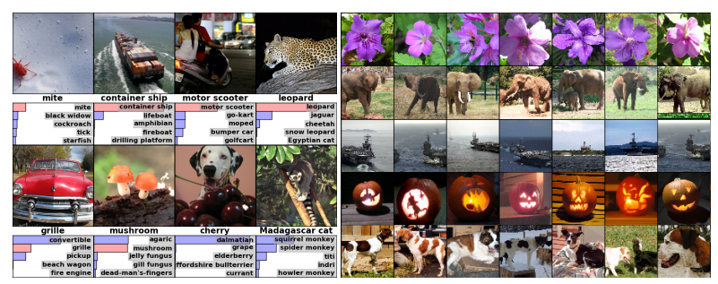
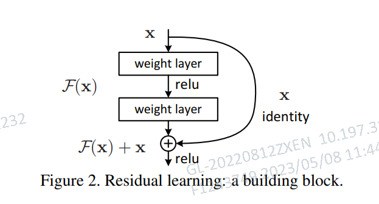
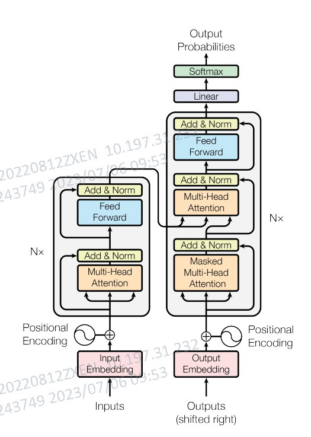
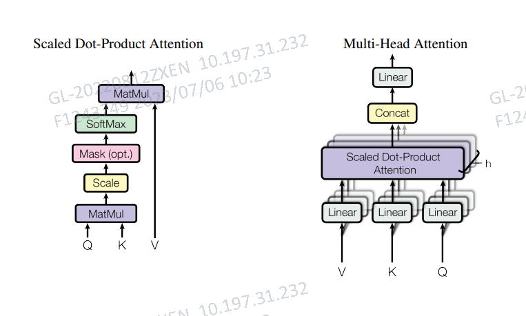
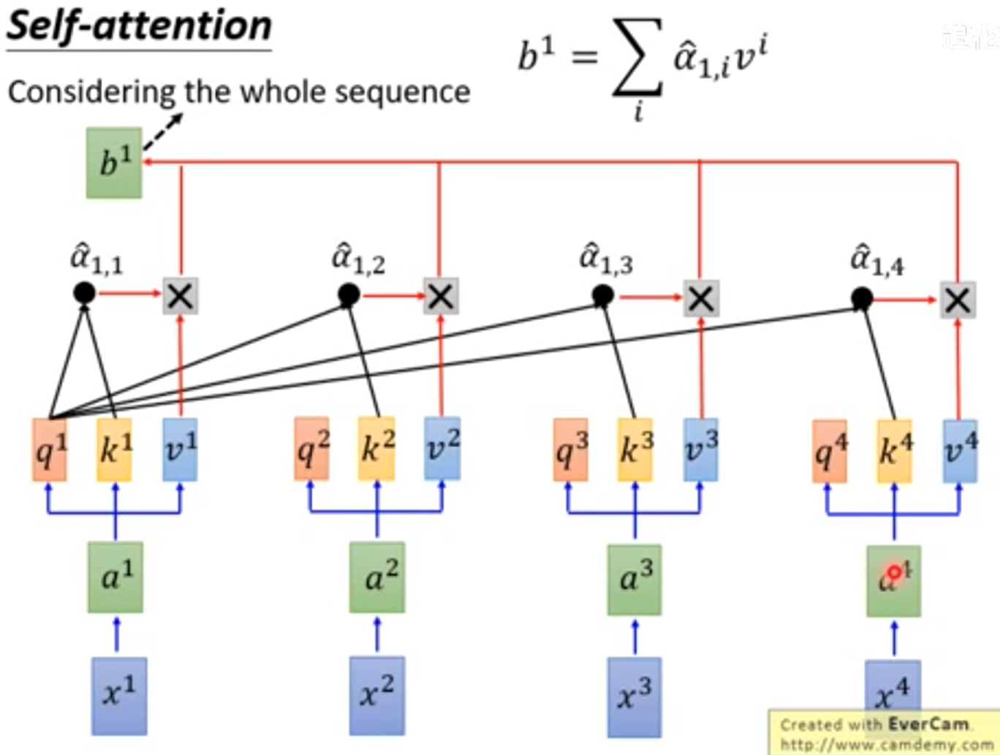
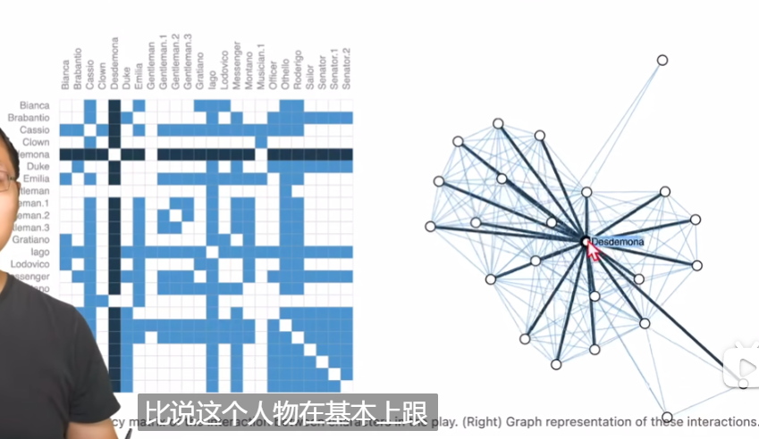
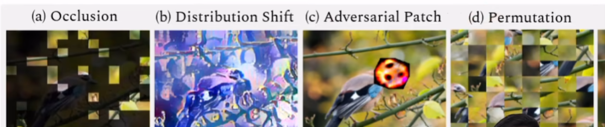
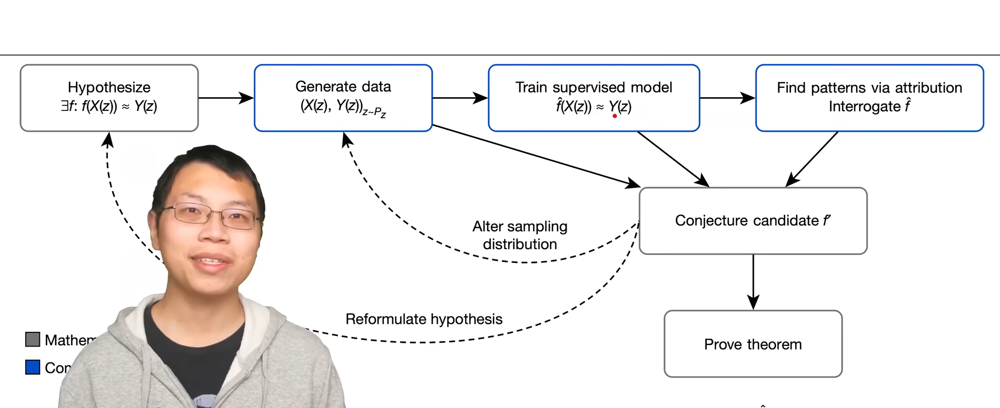
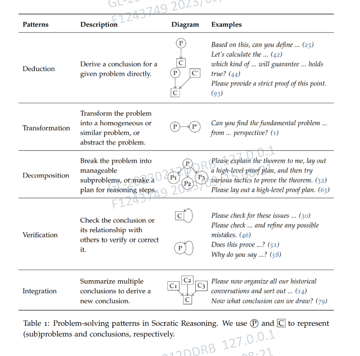

论文精读
- AlexNet - ImageNet Classification with Deep Convolutional Neural Networks
- RestNet - Deep Residual Learning for Image Recognition
- Transformer - Attention is All you Need
- GNN/GCN - A Gentle Introduction to Graph Neural Networks
- GAN - Generative Adversarial Networks
- BERT - Pre-training of Deep Bidirectional Transformers for Language Understanding
- ViT - An Image is Worth 16x16 Words
- MAE - Masked Autoencoders Are Scalable Vision Learners
- MOCO - Momentum Contrast for Unsupervised Visual Representation Learning
- Advancing mathematics by guiding human intuition with AI
- Large Language Model for Science:A Study on P vs. NP
AlexNet - ImageNet Classification with Deep Convolutional Neural Networks
- AlexNet，深度神经网络
- Training on Multiple GPUs
- Dropout方法非常有效，能显著提高模型的泛化能力
- Depth is important.有利于模型学习不同尺度的特征
- 卷积层：卷积层通过对输入数据进行卷积运算来提取特征，可以学习到输入数据的局部相关性和平移不变性。
- 池化层：池化层通过对输入数据进行下采样（平均或最大值）来减少计算量并提取更抽象的特征。
- 全连接层：全连接层则将前面层的输出连接到分类器，以输出预测结果。
- 向量集合：输入图片在 CNN 的倒数第二层的数，作为每个图片的语义向量；ps：作者并没有意识到此关键现象

RestNet - Deep Residual Learning for Image Recognition
- RestNet，残差网络
- 模型层数增加带来了训练误差，参数消失和参数爆炸
- Bottleneck设计
- 非线性层满足 F(x, {Wi}) ，然后从输入直接引入一个短连接到非线形层的输出上，使得整个映射变为 y = F(x, {Wi}) + x，这就是残差网络。

- 带短连接的网络的拟合高维函数的能力比普通连接的网络更强，梯度上比不加残差多了对x的梯度
- 更快的收敛
- 加入项能避免求导后整体趋于0，不容易出现梯度太小而导致梯度消失
Transformer - Attention is All you Need


- encoder-decoder架构，Bert使用了encoder，Gpt则使用了decode
- multi-attention: query、key相似度是key-value的权重，上方图即对应scaled dot-product
Attention(Q,K,V)=softmax(\frac{QK^T}{\sqrt{d_k}})V
- 对比RNN，Transformer在做Attention运算（一次输入所有数据+嵌入位置信息）已经汇聚了全局的信息；而RNN需要根据时序获得全局信息，且无法并行运算

GNN/GCN - A Gentle Introduction to Graph Neural Networks
博客 （需要科学的力量）
- 图是什么：一个图就代表各个实体节点（node）之间的关系（edge）
- 图无处不在：图片、文本、分子、社交关系等都可以表示为图
- 论文使用可视化技术直观地展现节点间的联系，这是本论文的亮点之一（见仁见智）

- 图解决哪几类问题：图层面、顶点级别、表级别
- 图神经网络的挑战：1. 高效存储 2. 对称性、连接不变性(行列交换不影响)
GAN - Generative Adversarial Networks
- 对抗模型：训练两个模型，辨别模型D（警察）和生成模型G（伪钞制作者），如果博弈中无法辨别真伪则训练收敛
BERT - Pre-training of Deep Bidirectional Transformers for Language Understanding
- 双向带掩码Transformer（完形填空）
- 预训练+微调
ViT - An Image is Worth 16x16 Words
- 我们将一幅图像分割为多个patches，并将这些patches的线性embeddings序列作为Transformer的输入
- 大一统了Transformer在CV、NLP领域SOTA，打破NLP、CV壁垒
- 在某些下游任务上表现比CNN更好

- 借鉴了Bert模型，例如添加了位置信息Position Embedding记录图片的相对位置
- 在ImageNet-21k以上数据集效果比卷积网络效果更好，更加经济。
MAE - Masked Autoencoders Are Scalable Vision Learners
- 图像切成不重叠的patch，并随机mask掉部分patch，mask掉的就是图中灰色的patch
- 可见的patch输入到encoder中，经过编码得到每个patch的特征
- 把mask的patch重新放回原来的位置，输入到decoder中去进行重构
- MAE的encoder是一个ViT，不同的是只输入没有masked掉的部分
MOCO - Momentum Contrast for Unsupervised Visual Representation Learning
-
对比学习的目的：自动的拉近相似样本之间的距离，增大不相似样本之间的距离
-
使用对比学习，可以通过代理任务非常灵活定义正样本（如同张图片不同视角）
- 动态字典的要求：（1）key数量足够多 （2）训练过程中，key要具有一致性，由相同或者相似的编码器得到，与q进行查询时才能保持一致（字典中的key是随机取样的）
- MoCo的两个亮点： （1）利用queue解决key数量过大，GPU显存不够的问题（每次只用queue中的一个batch进行训练） （2）引入momentum encoder，将m设大，是其更新缓慢，保证了key的一致性
- 恺明大神非常有远见的提出了：it is possible to adopt MoCo for pretext tasks like masked auto-encoding，这正是两年后MAE的思想
Advancing mathematics by guiding human intuition with AI

- 上图从左至右：猜想两个function之间联系 -> 收集数据 -> 通过训练数据辅助直觉找出联系 -> 通过归因来缩小特征空间
- 关注问题本身，而不应该将太多精力花费在算法上！
Large Language Model for Science:A Study on P vs. NP
论文阐述了通过97轮对话解决 P/NP 的数学难题，可见能否恰当使用prompt是能否充分挖掘LLM能力的关键
论文阐述了通过97轮对话解决 P/NP 的数学难题，可见能否恰当使用prompt是能否充分挖掘LLM能力的关键
论文阐述了通过97轮对话解决 P/NP 的数学难题，可见能否恰当使用prompt是能否充分挖掘LLM能力的关键

- 演绎（deduction）：在较小的问题（atomic problem）上，LLM 能够直接给出推理结果
- 变换（transformation）：把问题转化为相似问题，便于LLM分析处理
- 分解（decomposition）：对于更加复杂的问题，将问题转化成一个新问题或将其分解为几个子问题
- 验证（verification）：当产生新的问题或得出新的结论时，采用验证并进行验证和完善
- 融合（integration）： LLM 根据子问题的结果综合结论